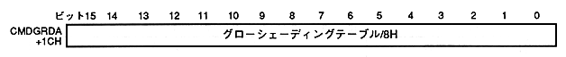

Return to previous page ｜ Return to menu ｜ Go to next page
-
■ 6.8 CMDGRDA (Gouraud Shading Table)
-
- Specify the address of the Gouraud shading table.
- The Gouraud shading table address is valid when Gouraud shading processing is specified for color calculation, and is specified in 16 bits for the start address of the command table + 1CH.

- Specify in 16 bits by dividing the address of the Gouraud shading table by 8H.
- The Gouraud shading table is a table for Gouraud shading processing, which defines the amount of change in brightness for each of the four vertices (two in the case of lines) RGB. The table size is 8HByte (4word) and is defined by 8HByte boundary.
Return to previous page ｜ Return to menu ｜ Go to next page